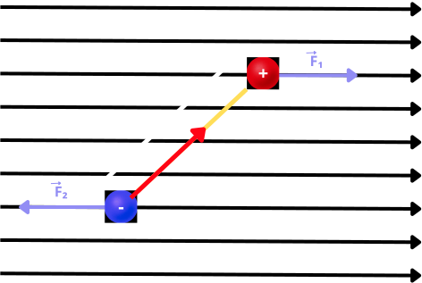

Dipolo eléctrico
Consideremos el siguiente dipolo situado en un campo eléctrico uniforme y externo a él. Observamos que las
fuerzas, sobre las cargas positiva y negativa, generada por el campo eléctrico externo y
uniforme son de la
misma magnitud y dirección, pero de sentido contrario.
(Los alumnos deberán indicar cuál es el sentido de
cada
fuerza). Es decir, el campo eléctrico será el mismo en ambas cargas. Por lo que:
\(\left\Vert\vec{F}_1\right\Vert = \left\Vert\vec{F}_2\right\Vert \ es \ decir; \
\left\Vert\vec{E}q\right\Vert\) tendrá el mismo valor tanto para \(+q\) como para \(–q\).

Por lo que, la fuerza neta externa ejercida por el campo eléctrico sobre el dipolo será igual a cero.
La primera vez que hablamos del dipolo eléctrico mencionamos una característica de él:
El momento dipolar: \(\boldsymbol{\vec{p} = q\vec{d}}\)
donde la dirección del momento dipolar es de la carga negativa a la carga positiva; formando el vector del
momento dipolar un ángulo \(\theta\) con el campo eléctrico externo.
Por otra parte, en el centro de masa del dipolo existe un momento de torsión \(\vec{\tau}\), el cual tiende a
girar al dipolo para llevar a \(\vec{p}\) a alinearse con \(\vec{E}\).
Así podemos decir que: \(\left\Vert\vec{\tau}\right\Vert= 2F\left(\frac{d}{2} \right)\sin{\theta}; \ pero \ F = Eq, \ entonces:\left\Vert\vec{\tau}\right\Vert = 2Eq\left(\frac{d}{2} \right)\sin{\theta}\)
es decir: \(\left\Vert\vec{\tau}\right\Vert = F\left(d\right)\sin{\theta}\); \(\left\Vert\vec{\tau}\right\Vert = Eqd\sin{\theta}\)
pero: \(qd = p\)
entonces: \(\left\Vert\vec{\tau}\right\Vert = Ep\sin{\theta}\)
Por otra parte, como \(\vec{p}\) se va a alinear con \(\vec{E}\), entonces \(\vec{p}\) sigue a \(\vec{E}\).
Por lo que finalmente:
\[
\vec{\tau} = \vec{p} \times \vec{E}
\]
Para nuestro caso, la dirección del momento de torsión \(\vec{\tau}\) es perpendicular al pizarrón y entrando a él. Recordar la regla de la mano derecha.
Hasta aquí dejaremos el tema de dipolo eléctrico en un campo eléctrico, ya que uno de los objetivos de revisar este tema es trabajar el concepto de fuerza conservativa en la dinámica de la partícula; usando tanto las leyes de Newton como la conservación de la energía. En nuestro programa de estudios no se encuentra el estudio de la dinámica rotacional.
Resumen
Hemos hablado de cargas y campos y debemos tener presente que:
- 1.- en el concepto clásico (es el que estamos revisando) hay una marcada diferencia entre los campos y las partículas ya que se consideran como entidades distintas.
- 2.- en la teoría moderna las partículas son manifestaciones de los campos; es decir las entidades fundamentales son los campos. ¿por qué?; por los valores que adquieren los campos en determinados puntos; es decir donde se mida una intensidad mayor de campo muy seguramente se encuentren partículas cargadas.